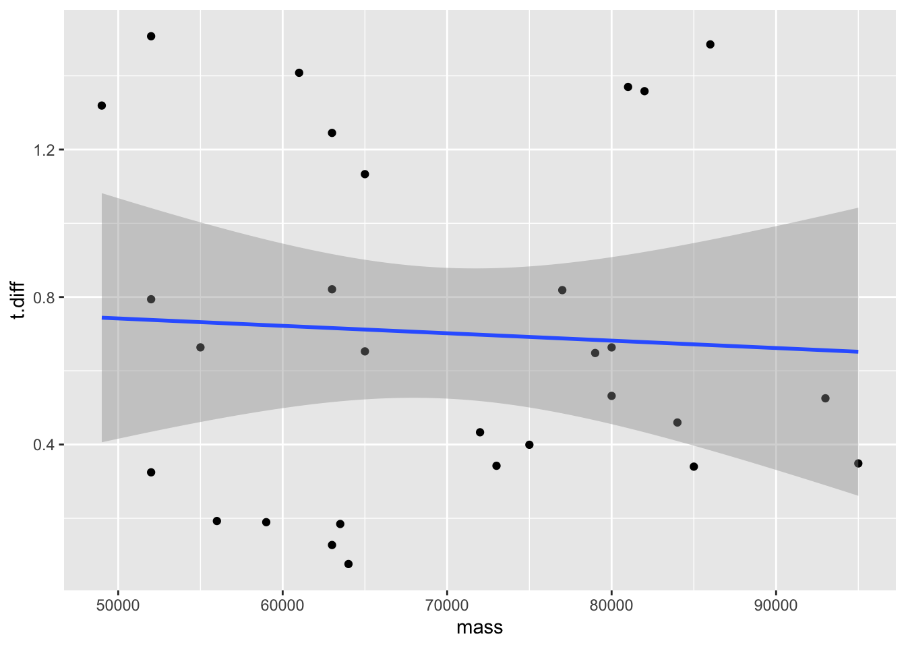
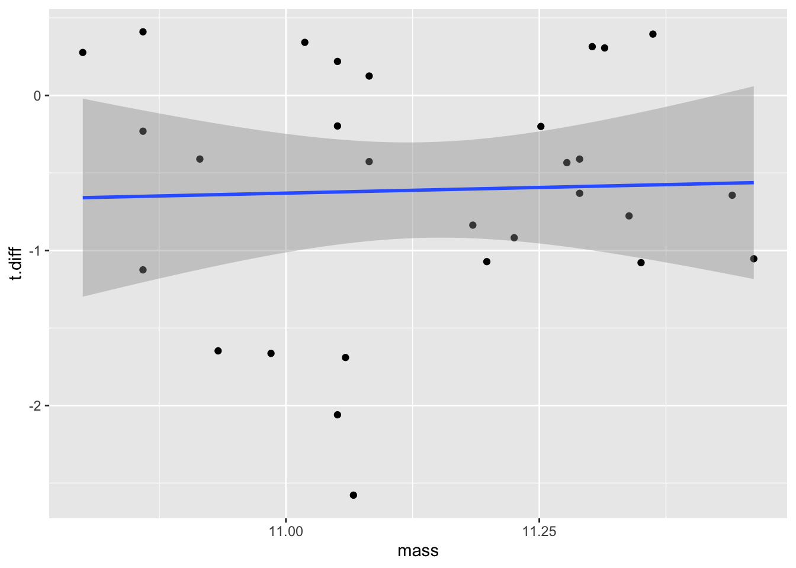
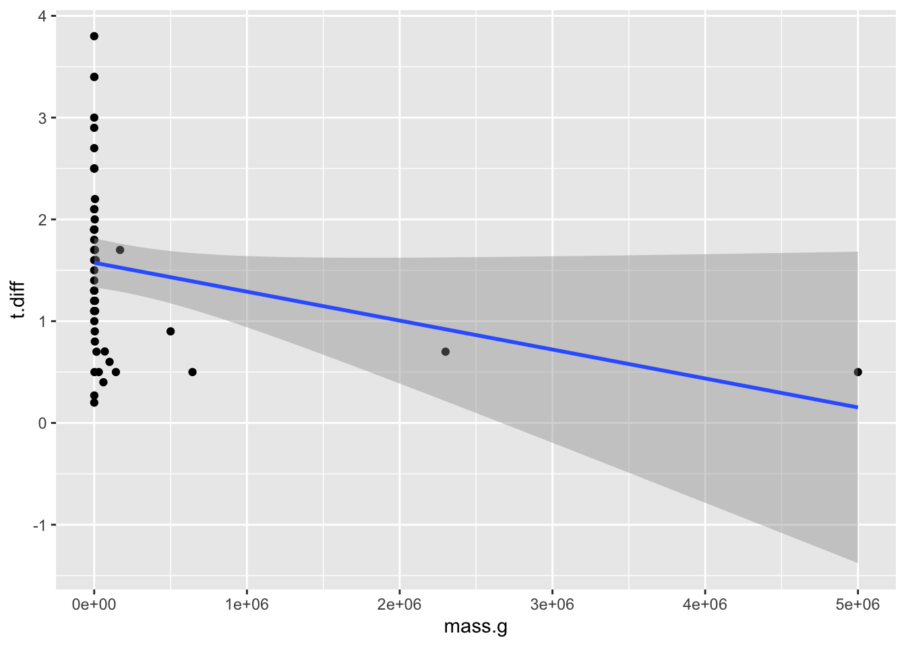
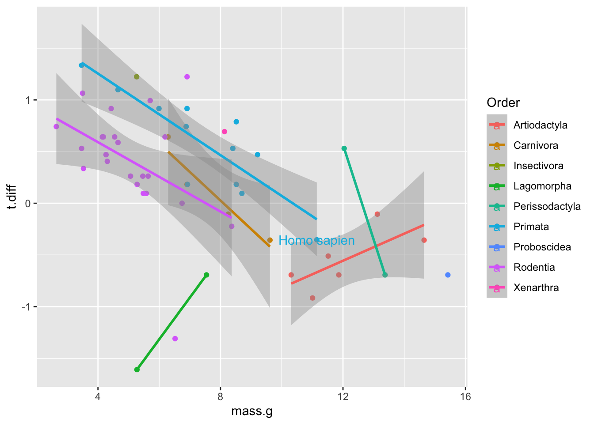

Load the data using our convention for many files. That is:
list.files()for loop to iterate through file names and read in dataNotice I pull the files from a folder within the directory that contains the .Rmd.
library(tidyverse)
library(MuMIn)
f <- list.files(path = paste0(getwd(),"/proj6data"),pattern=".csv",full.names = T)
d.l <- list() #emply list
for(i in f){
met <- unlist(strsplit(basename(i),"_"))
time <- met[3]
mass <- as.numeric(gsub(".csv","",met[4]))
d.l[[basename(i)]] <- read_csv(i)%>%
mutate(team=met[1],subject=met[2],time=time,mass=mass*1000) #note mass converted to grams, same for M&L04
}Now we can combine all the data in the list, group by subject, time, and mass, then summarize with mean(). Then, pivot the table wider (with names from time and values from the mean temp calculation) so that we can later find the difference between day and night temperatures.
dat <- do.call(rbind,d.l)%>%
group_by(subject,time,mass)%>%
summarize(m.temp=mean(Temp))%>%
pivot_wider(names_from=time,values_from=m.temp)%>%
mutate(t.diff=abs(day-night))%>%
print## `summarise()` regrouping output by 'subject', 'time' (override with `.groups` argument)## # A tibble: 30 x 5
## # Groups: subject [30]
## subject mass day night t.diff
## <chr> <dbl> <dbl> <dbl> <dbl>
## 1 subject01 52000 38.0 37.2 0.794
## 2 subject02 73000 37.3 36.9 0.342
## 3 subject03 59000 36.7 36.5 0.189
## 4 subject04 72000 38.1 37.6 0.433
## 5 subject05 64000 29.7 29.6 0.0759
## 6 subject06 61000 36.2 34.7 1.41
## 7 subject07 52000 35.2 33.7 1.51
## 8 subject08 93000 29.6 29.1 0.525
## 9 subject09 52000 38.1 37.7 0.325
## 10 subject10 63500 30.0 29.8 0.184
## # … with 20 more rowsFirst, let’s log transform the data and set it aside in a new tibble
## # A tibble: 30 x 3
## # Groups: subject [30]
## subject mass t.diff
## <chr> <dbl> <dbl>
## 1 subject01 10.9 -0.231
## 2 subject02 11.2 -1.07
## 3 subject03 11.0 -1.66
## 4 subject04 11.2 -0.836
## 5 subject05 11.1 -2.58
## 6 subject06 11.0 0.342
## 7 subject07 10.9 0.410
## 8 subject08 11.4 -0.644
## 9 subject09 10.9 -1.13
## 10 subject10 11.1 -1.69
## # … with 20 more rowsNow let’s plot both unstransformed data and log transformed:
## `geom_smooth()` using formula 'y ~ x'## Warning: Removed 1 rows containing non-finite values (stat_smooth).## Warning: Removed 1 rows containing missing values (geom_point).
## `geom_smooth()` using formula 'y ~ x'## Warning: Removed 1 rows containing non-finite values (stat_smooth).## Warning: Removed 1 rows containing missing values (geom_point).
Doesn’t look like we have much of a relationship. But let’s run models and check it out.
diff.lm <- lm(t.diff~mass,dat)
diff.loglm <- lm(t.diff~mass,dat.log)
lapply( list(diff.lm,diff.loglm),anova)## [[1]]
## Analysis of Variance Table
##
## Response: t.diff
## Df Sum Sq Mean Sq F value Pr(>F)
## mass 1 0.0192 0.019213 0.0887 0.7681
## Residuals 27 5.8474 0.216571
##
## [[2]]
## Analysis of Variance Table
##
## Response: t.diff
## Df Sum Sq Mean Sq F value Pr(>F)
## mass 1 0.0214 0.02140 0.0327 0.8579
## Residuals 27 17.6746 0.65461These are not significant relationships. But, if you had to, you could find which model fits best. Though, it’d be a pretty bad model nonetheless.
## [[1]]
## [1] 42.82088
##
## [[2]]
## [1] 74.89853There’s definitely no clear relationship between \(T_{\Delta}\) and mass in our human subjects.
First, let’s read in the mammal data from Mortola and Lanthier (2004) and do the same operations that we did on our data. Let’s add our data, too, after computing mean mass and \(T_{\Delta}\).
## Parsed with column specification:
## cols(
## Order = col_character(),
## species = col_character(),
## mass.g = col_double(),
## T.high = col_double(),
## T.low = col_double()
## )## # A tibble: 51 x 6
## Order species mass.g T.high T.low t.diff
## <chr> <chr> <dbl> <dbl> <dbl> <dbl>
## 1 Artiodactyla Bos taurus 500250 39.4 38.5 0.900
## 2 Artiodactyla Capra hircus 30000 39.1 38.6 0.5
## 3 Artiodactyla Hippopotamus amphibius 2300000 36.5 35.8 0.7
## 4 Artiodactyla Lama glama 142000 38.2 37.7 0.5
## 5 Artiodactyla Lama pacos 60250 38.2 37.8 0.4
## 6 Artiodactyla Sus scrofa 100500 38.7 38.1 0.6
## 7 Carnivora Canis familiaris 15000 38.4 37.7 0.700
## 8 Carnivora Vulpes zerda 1000 38.5 37.3 1.2
## 9 Carnivora Herpestes sanguineus 540 39.2 37.3 1.9
## 10 Carnivora Nasua nasua 3850 38.3 37.4 0.900
## # … with 41 more rowsdat.mean <- dat%>%
mutate(Order="Primata",
species="Homo sapien"
)%>%
group_by(Order,species)%>%
summarize(mass.g=mean(mass,na.rm = T),t.diff=mean(t.diff,na.rm=T)) #remove NA in data ## `summarise()` regrouping output by 'Order' (override with `.groups` argument)## # A tibble: 52 x 4
## Order species mass.g t.diff
## <chr> <chr> <dbl> <dbl>
## 1 Artiodactyla Bos taurus 500250 0.900
## 2 Artiodactyla Capra hircus 30000 0.5
## 3 Artiodactyla Hippopotamus amphibius 2300000 0.7
## 4 Artiodactyla Lama glama 142000 0.5
## 5 Artiodactyla Lama pacos 60250 0.4
## 6 Artiodactyla Sus scrofa 100500 0.6
## 7 Carnivora Canis familiaris 15000 0.700
## 8 Carnivora Vulpes zerda 1000 1.2
## 9 Carnivora Herpestes sanguineus 540 1.9
## 10 Carnivora Nasua nasua 3850 0.900
## # … with 42 more rows## # A tibble: 6 x 4
## Order species mass.g t.diff
## <chr> <chr> <dbl> <dbl>
## 1 Primata Microcebus myoxinus 32 3.80
## 2 Primata Papio cynocephalus 10000 1.6
## 3 Primata Saimiri sciureus 971 2.1
## 4 Proboscidea Elephas maximus 5000000 0.5
## 5 Xenarthra Dasypus novemcinctus 3400 2
## 6 Primata Homo sapien 69250 0.702Now let’s make a log-transformed tibble and, plot the relationships, and then construct linear and log-linear models and compare them.
m.dat.log <- m.dat%>%
mutate_at(c("mass.g","t.diff"),log)
mam.lm <- lm(t.diff~mass.g,m.dat)
mam.loglm <- lm(t.diff~mass.g,m.dat.log)
m.dat%>%
ggplot(aes(mass.g,t.diff))+geom_point()+geom_smooth(method="lm")## `geom_smooth()` using formula 'y ~ x'
This totally looks wacky of course, because mammals span 6 orders of magnitude in terms of mass.
## `geom_smooth()` using formula 'y ~ x'This is much better.
Let’s now compare the models with AICc.
We see that the log-linear model fits much better. Is the relationship significant?
## Analysis of Variance Table
##
## Response: t.diff
## Df Sum Sq Mean Sq F value Pr(>F)
## mass.g 1 6.6545 6.6545 20.929 3.169e-05 ***
## Residuals 50 15.8980 0.3180
## ---
## Signif. codes: 0 '***' 0.001 '**' 0.01 '*' 0.05 '.' 0.1 ' ' 1The log relationship is significant. So now let’s extract the coefficients (intercept and slope, i.e. scaling exponent)
## (Intercept) mass.g
## 1.0761906 -0.1162042## (Intercept)
## 2.933483M&L report a relationship of \(T_{\Delta}=3.35C^oW^{0.13}\). Ours is \(T_{\Delta}=2.93C^oW^{0.12}\), so pretty close.
Let’s first replot our log-log data but know coloring points by order. We’ll highlight out data for humans, too.
m.dat.log%>%
ggplot(aes(mass.g,t.diff,col=Order))+geom_point()+geom_smooth(method="lm")+geom_text(aes(mass.g,t.diff,label=species),m.dat.log%>%filter(species=="Homo sapien"))## `geom_smooth()` using formula 'y ~ x'## Warning in qt((1 - level)/2, df): NaNs produced
## Warning in qt((1 - level)/2, df): NaNs produced## Warning in max(ids, na.rm = TRUE): no non-missing arguments to max; returning -
## Inf
## Warning in max(ids, na.rm = TRUE): no non-missing arguments to max; returning -
## Inf
Looks like we reproduced a good study for humans according to the primate trend! Nice work!!
Now let’s assess the the model, comparing it to the simpler model.
## df AICc
## mam.loglm 3 92.44687
## mam.order.lm 16 80.68673The more complex model is a better fit. What about the significance of the effect of taxonomic order?
## Analysis of Variance Table
##
## Response: t.diff
## Df Sum Sq Mean Sq F value Pr(>F)
## mass.g 1 6.6545 6.6545 42.7542 1.176e-07 ***
## Order 8 7.6283 0.9535 6.1263 4.977e-05 ***
## mass.g:Order 5 2.5107 0.5021 3.2262 0.01622 *
## Residuals 37 5.7589 0.1556
## ---
## Signif. codes: 0 '***' 0.001 '**' 0.01 '*' 0.05 '.' 0.1 ' ' 1We probably wanted to assume interactions with *. This interaction is significant which means the scaling exponent (slope of the log-log relationship) is affected by taxonomic order.
Mortola, Jacopo P, and Clement Lanthier. 2004. “Scaling the Amplitudes of the Circadian Pattern of Resting Oxygen Consumption, Body Temperature and Heart Rate in Mammals.” Comparative Biochemistry and Physiology Part A: Molecular & Integrative Physiology 139 (1): 83–95.